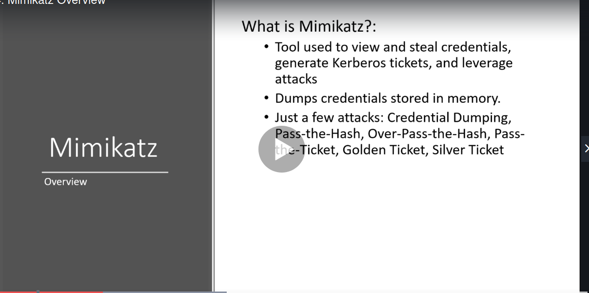

https://github.com/gentilkiwi/mimikatz
went to this
channces are this tool can get caught up on the machine so there are even other tools like Invoke-Mimikatz which is a powerhsell tool so u can upload it to ur windows machine
or u can run it via iex which is way to download files via powershell and u can download and execute without even touchign the disc
from below site donwload to domain controller
https://github.com/gentilkiwi/mimikatz/releases
we ve compromised the DC and now what we can do and how to get a golden ticket and stuff


debug means its allowign us to debug process

doing this

so this gives us ntlm hash of any user which has logged in since the last reboot

thus administrator is the onlu account whihc i have logged in into
here wdigest is imp and was there in windows 7 and befre and stored password in clear text
so even now in latest windows feature is just off and we can turn it on
and wait for somebody to logon to the computer
and we ll find the password then

thus these both didnt work out

/patch is imp very much
lsa means local security authority
its protected subsystme in windows
take all such ntlm hashes and crack them and give client a percent of how manty were u able to crack
u need the above krbtgt ka ntlm for next attack